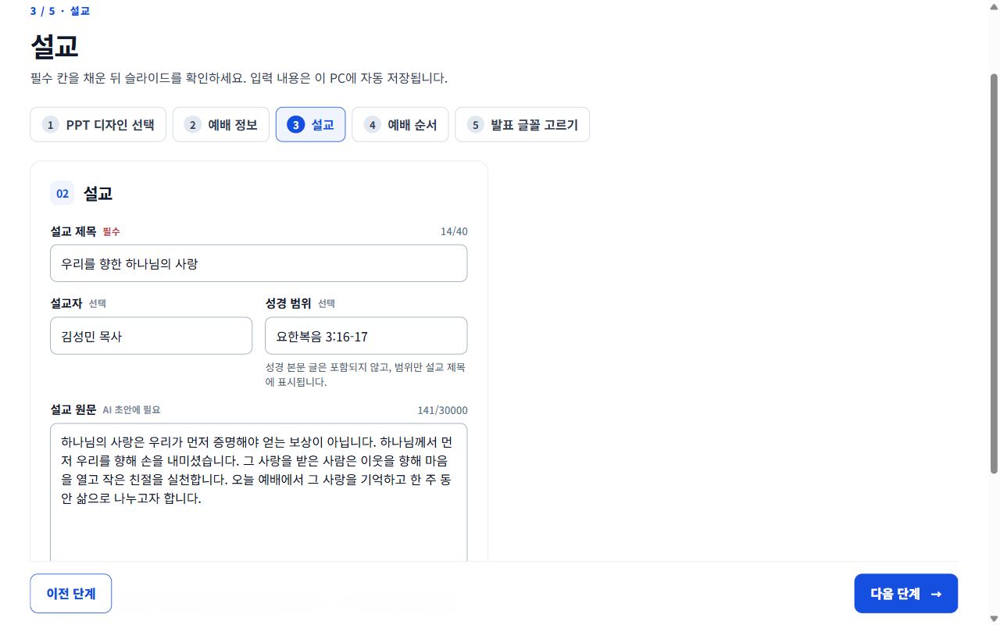
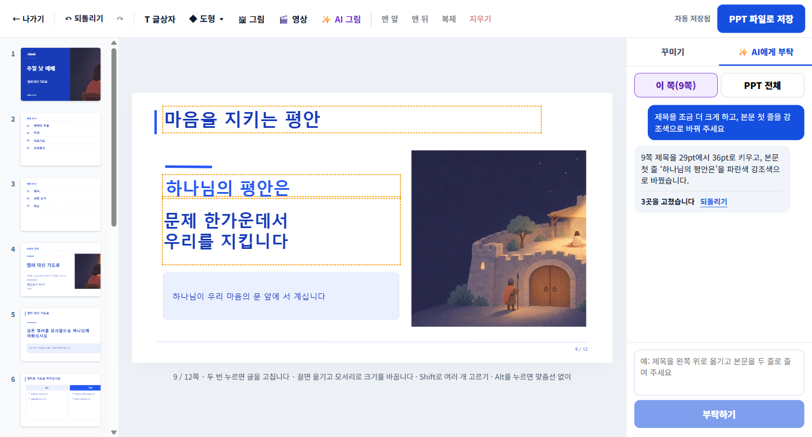

Windows 10 · 11
64비트 · 설치 프로그램(.exe) · 약 200MB
준비 중- 받은 파일을 엽니다.
- “Windows의 PC 보호” 창이 뜨면 추가 정보 → 실행을 누릅니다. 아직 코드 서명 전이라 나오는 창입니다.
- 설치가 끝나면 첫 화면에서 쓸 AI(Claude·Codex 등)를 고르고 로그인합니다.
주일 예배 PPT · Windows · 무료
원고와 이번 주 예배 순서를 넣으면, AI가 몇 장으로 만들지 정하고 슬라이드를 짜고 그림까지 그립니다. 마지막 손질은 편집기에서 직접 하거나 AI에게 말로 부탁하세요.
이미 쓰는 Claude·Codex 계정으로 움직입니다. 원고와 예배 정보는 이 PC에만 저장됩니다.
새로: 주보도 만들어요 — 쉬운주보 보기 →
만드는 순서

0.16.0에서 새로 · 편집기
AI가 만든 결과가 끝이 아닙니다. 캔바처럼 끌어서 옮기고, 필요한 것은 넣고, 손이 많이 가는 일은 AI에게 맡기세요.

글상자·도형·그림·영상을 넣고, 끌어서 옮기고 모서리로 크기를 바꿉니다. 맞춤선이 있어 줄이 반듯합니다. 쪽은 Shift·Ctrl로 여러 개 골라 한꺼번에 끌어 옮기거나 지우고, 그림의 흰 배경은 투명하게 지웁니다.
“이 쪽 제목을 크게”, “모든 쪽 제목 색을 남색으로”처럼 말하면 AI가 고칩니다. 고친 곳은 주황 점선으로 보이고, 마음에 안 들면 되돌리기 한 번이면 됩니다.
“새벽 호숫가에서 종이배를 띄우는 손”처럼 적으면 고른 화풍으로 그려서 지금 쪽에 넣습니다. 한 장에 1분쯤 걸립니다.
쪽 넘김과 나타나기를 쪽·글마다 고르고 [▶ 움직임 보기]로 미리 봅니다. 저절로 흐르게 할지, 클릭할 때마다 하나씩 나오게 할지도 정합니다.
지키는 것
개발 · 목회 AI 연구소
작은 교회도 매주 좋은 예배 화면을 쓸 수 있도록 만들고 있습니다. 도움이 되셨다면 후원으로 함께해 주세요. 후원하지 않으셔도 모든 기능을 그대로 쓰실 수 있습니다.
쓰다가 막히거나 바라는 기능이 있으면 카카오 오픈채팅 ↗이나 GitHub 문제 기록 ↗으로 알려 주세요.
내려받기 · v0.33.0
64비트 · 설치 프로그램(.exe) · 약 200MB
준비 중아직 0.33.0이 없습니다. 준비되면 이곳에 올립니다.
Apple Silicon 준비 중 Intel 준비 중이전 버전 0.11.0입니다. 편집기는 들어 있지 않습니다.
AppImage 준비 중 .deb 준비 중